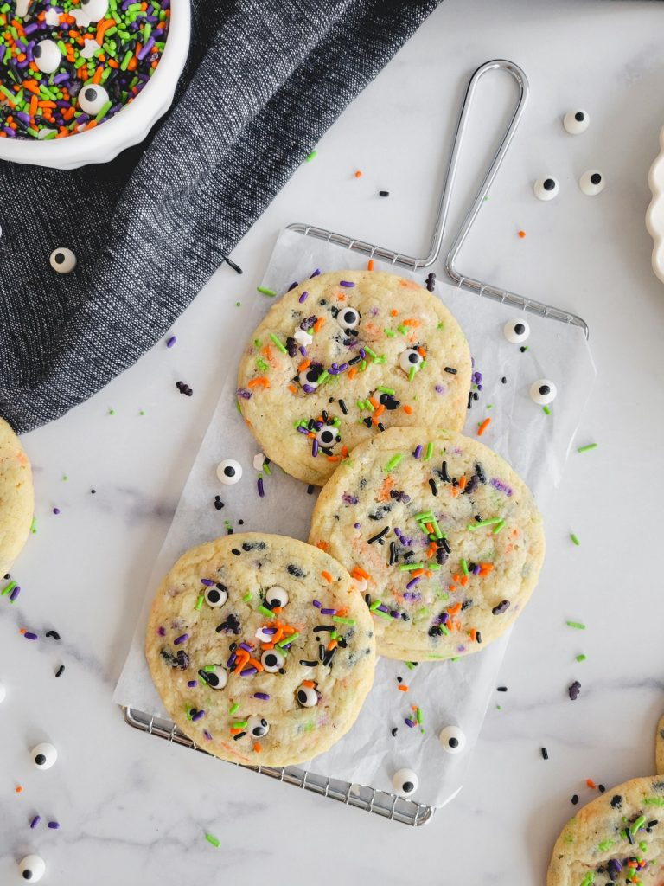

Sprinkle Cookies

Description
Soft and buttery with a burst of color, they're as easy to make as they are delicious. Perfect for your Halloween party, trick-or-treat goodies, or simply enjoying at home!
Ingredients
- 2 ¾ cups
- ½ tsp baking powder
- ½ tsp baking soda
- 1 ½ cups granulated sugar
- 1 cup unsalted butter, softened
- 2 eggs
- 2 tsp vanilla extract
- ½ cup Halloween jimmies sprinkles
- Candy eyeballs for pressing into baked cookies (optional)
Steps
- Preheat oven to 350°F and line baking sheets with parchment paper or silicone baking mats.
- In a small bowl combine the all-purpose flour, baking powder, baking soda and salt.
- Use a stand mixer fitted with the paddle attachment to cream the softened butter and granulated sugar until light and fluffy.
- Add eggs one at a time and vanilla until just combined. Scrape the sides of the bowl.
- Add the dry ingredients all at once and mix on low speed until almost combined. Then add the sprinkles and keep mixing. Do not over-mix the dough!
- Using a 3 tbsp cookie scoop, scoop dough onto lined baking sheets. Be sure to adjust the baking time if your cookies are smaller/larger.
- Bake sprinkle cookies for 14 minutes then cool on the baking sheet. The cookies will continue to bake as they cool. If desired, press candy eyeballs into warm cookies.
Back